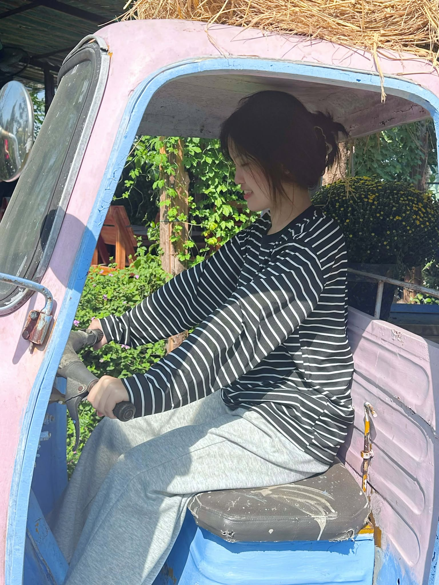
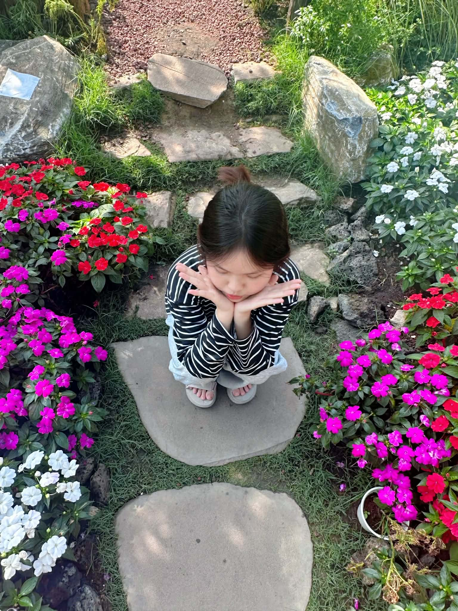

Giới thiệu

Họ tên: Nguyễn Hồng Anh
Biệt danh: Hồng / Anh
Châm ngôn: "Sống nhẹ nhàng, cố gắng từng chút một để trở thành phiên bản tốt hơn của chính mình."
Khoảnh khắc đáng nhớ


Cảm nghĩ năm cuối
Năm cuối cấp là khoảng thời gian rất đặc biệt đối với mình.
Có những lúc áp lực vì bài vở, thi cử và tương lai phía trước,
nhưng cũng có rất nhiều kỷ niệm đẹp với bạn bè và thầy cô.
Mình hy vọng sau này khi nhìn lại, những ngày tháng này sẽ luôn
là một phần ký ức thật đáng nhớ của tuổi học trò.